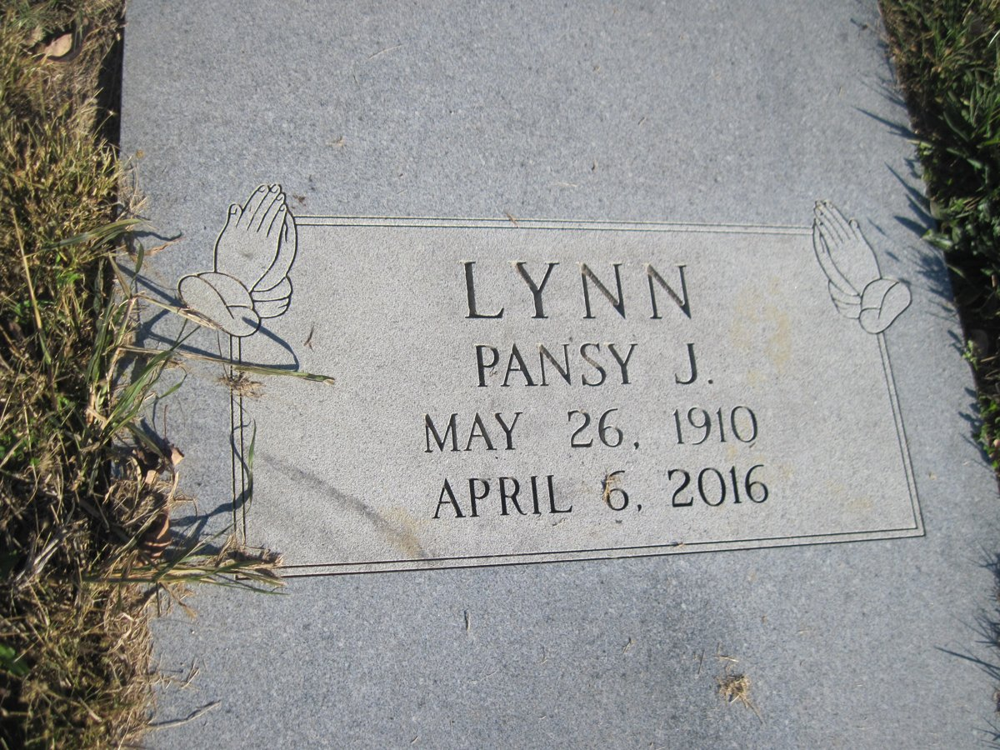

Washington line by marriage · mother of Harold Russell Washington · later Pansy J. Lynn
Quick Facts
Born
26 May 1910, South Carolina; birthplace in the 1930, 1940 and 1950 censuses DOCUMENTED; date from her headstone SUPPORTED
Maiden name
Robertson (1930 marriage record) DOCUMENTED; indexed as Robinson in Harold’s death index
Married
13 February 1930, Newport, Campbell County, Kentucky, to Herman Washington DOCUMENTED
Lived
Cincinnati, Hamilton County, Ohio, 1930–1950 DOCUMENTED
Died
6 April 2016, Cincinnati, age 105; buried Vine Street Hill Cemetery, Cincinnati, under the name Pansy J. Lynn (Find a Grave memorial 161232717, which links her son Herbert Washington) SUPPORTED
Immediate Family
Parents
Ned Robertson and Viola Robertson, named on her 1930 marriage record DOCUMENTED. Both born in South Carolina (1930 census) DOCUMENTED.
Spouse
Herman Washington (born about 1905, Tennessee), married 13 February 1930 DOCUMENTED; separated by 1950 DOCUMENTED. She later took the surname Lynn (headstone); that husband is not yet identified SUPPORTED.
Children
Theda Washington (born about 1931, Ohio) DOCUMENTED
13 Feb 1930 Married Herman Washington at Newport, Campbell County, Kentucky DOCUMENTED
1930 Living in Cincinnati with Herman DOCUMENTED
3 Dec 1937 Son Harold Russell Washington born, Cincinnati DOCUMENTED
1940 In Herman’s Cincinnati Ward 7 household with five children DOCUMENTED
1950 Separated; head of her own Cincinnati household with seven children DOCUMENTED
6 Apr 2016 Died in Cincinnati, age 105, as Pansy J. Lynn; buried Vine Street Hill Cemetery, the same cemetery as her son Harold SUPPORTED
Life Story
Pansy Robertson was born in South Carolina, the daughter of Ned and Viola Robertson DOCUMENTED. On 13 February 1930 she married Herman Washington in Newport, Kentucky DOCUMENTED, and they made their home in Cincinnati, where she raised at least nine children DOCUMENTED. By 1950 she was separated and heading the household herself, with seven children still at home DOCUMENTED. She later remarried and became Pansy J. Lynn. She died in Cincinnati on 6 April 2016, at 105, and is buried at Vine Street Hill Cemetery, where her son Harold also lies SUPPORTED.
Photo Gallery

Headstone: LYNN, Pansy J., May 26, 1910 – April 6, 2016, Vine Street Hill Cemetery, Cincinnati. Photo by the Find a Grave cemetery photographer, memorial 161232717. No portrait has been located yet.
Sources and Evidence
Kentucky, County Marriages, 1786–1965: Herman Washington, 24, and Pansy Robertson, 21, married 13 February 1930 at Newport, Campbell County, Kentucky; her parents Ned and Viola Robertson; his parents Wm and Cecelia Washington. FamilySearch Q2D4-TSHR (image 3Q9M-C91S-X3S4-W) DOCUMENTED
United States Census, 1930, Cincinnati, Hamilton County, Ohio, sheet 5A: Herman Washington, 25, head, born Tennessee; Pansy Washington, 20, wife, born South Carolina. FamilySearch X47T-VB5DOCUMENTED
United States Census, 1940, Cincinnati Ward 7, Hamilton County, Ohio, ED 91-111, sheet 1B: Herman Washington, 34, Tennessee; Pansy, 28, South Carolina; Theda 9, Herbert 7, William 6, Leon 3, Harold 2, all born in Ohio. FamilySearch KWPD-Y7CDOCUMENTED
United States Census, 1950, Cincinnati, Hamilton County, Ohio, ED 91-646, p. 8: Pansy Washington, 37, head, separated, born South Carolina, with William 15, Leon 13, Harold 12, Carl 10, Audrey 9, Yvonne 5, Barbara 3. FamilySearch 6XY1-G2R1DOCUMENTED
Social Security NUMIDENT for Harold R. (Harold Russell) Washington, born 3 December 1937 in Cincinnati, died 15 July 2006: father Heman Washington, mother Pansy (surname given as Unknown). FamilySearch 6K33-YG49DOCUMENTED
Ohio Death Index for Harold Russell Washington, died 15 July 2006: parents' surnames indexed as "Washington, Robinson," likely a misreading of Robertson. FamilySearch VKRT-NTWSUPPORTED
Find a Grave memorial 161232717, Pansy J. Washington-Lynn: born 26 May 1910, South Carolina; died 6 April 2016, Cincinnati, aged 105; buried Vine Street Hill Cemetery; headstone photo reads LYNN, Pansy J., May 26, 1910 – April 6, 2016; lists son Herbert Washington (1932–2000). Indexed on FamilySearch as Q23B-PW76. SUPPORTED
Grades: DOCUMENTED an original record says it · SUPPORTED several records point to it · FAMILY ACCOUNT the family's own telling · UNPROVED a lead, not proved.
Research Notes and Open Questions
Find her April 2016 obituary, which should name her children and her husband Lynn.
The FamilySearch tree gives her birth year as 1912; the 1930 census and marriage ages point to about 1909–1910.
Find Ned and Viola Robertson in South Carolina, and when the family came to Ohio.
An Ohio marriage index lists a Pansy Robertson as mother of the groom for a Herbert Washington (FamilySearch KDMJ-F8K), consistent with her son Herbert.
Harold Russell Washington is proved to be Herman and Pansy’s son by the 1940 and 1950 censuses and his Social Security record. That he is the same Harold who fathered Brandon Emil Niles, Sr. rests on the family account and his birth month; no record yet names Brandon or Leslie Mae Niles with this Harold.
Pansy is recorded as separated in 1950 and Herman is not in her household. Whether Herman is the father of Yvonne (about 1945) and Barbara (about 1947) is not established.
Profile history: Created 15 November 2026, with headstone photo, for Generation V from FamilySearch census, marriage, and Social Security records, with a couple folder and contribution links.